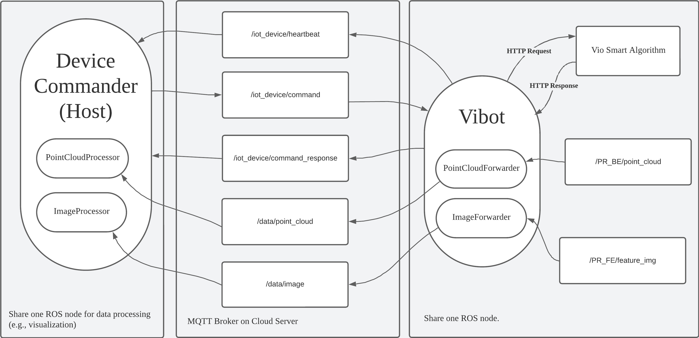

ROS MQTT bridge
Project Architecture Diagram
The project consists of three main components: an IoT device, a cloud platform, and a local host. The program are run in the localhost and device separately.
The device with ROS and other capturing capabilities.
A reliable cloud server with public IP. It doesn't matter which cloud you choose (e.g., AWS EC2, Aliyun ECS).
The localhost should have Linux environment and ROS installed.
Codes kept confindetial.
